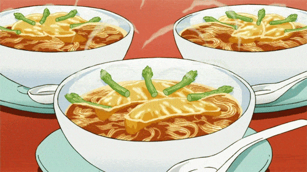

Anime Style Ramen Recipe

Description
Have you ever wanted to make the picture perfect ramen you see in anime?
Me too!
Too bad! Maybe one day :(
Ingredients
- Noodles
- Corn
- Water
- Green Onion
- Pork Broth
- Some delicious schmeat
Instructions
- Put noodles in boiling water
- Maybe you heat up the broth first? I don't know
- Cook the schmeat
- Chop your green onions
- Cook your corn and add butter. It is not in the ingredients list
but you should have it or you are weird.
- put your cooked noodles in the broth and throw everything else in too.
- Done!